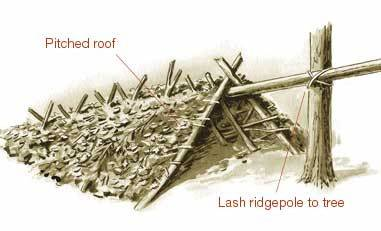
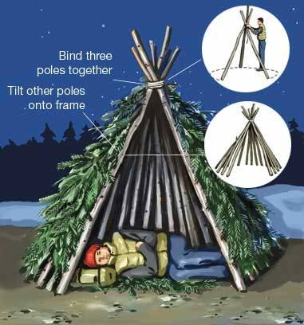
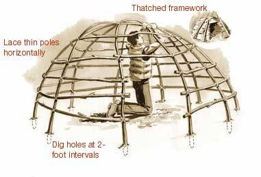
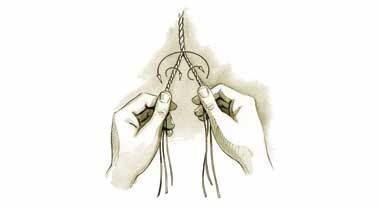
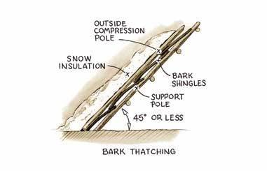
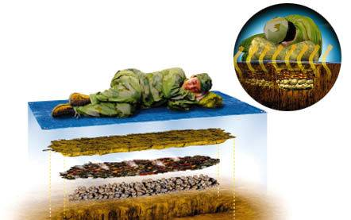

Seven Primitive Survival Shelters That Could Save Your Life
Quintze Hut
Properly constructed, this poor man's igloo can be body-heated to above freezing on a 20-below day, higher if you light a candle.
Step One Build up snow to a depth of at least 8 inches and pack it down to make a floor.
Step Two Heap loose snow onto the floor. Piling the snow over a backpack or mound of branches will let you create a hollow, which hastens the excavation process, but it isn't necessary. Let the snow consolidate for an hour or more, until it is set up hard enough to form snowballs.
Step Three Tunnel through the mound at opposite ends to dig out the center efficiently, fill in the unused entrance, and crawl inside to shape the interior. Ideally, the quintze should be narrow at the foot end, with a bed long enough to lie down on, and just tall enough at the head end for you to sit up. The walls and roof need to be at least a foot thick (check this with a stick).
Step Four Poke out an air vent overhead and dig a well at the entrance for the cold air to settle into. Cut a snow block for a door. Glaze interior walls with a candle to prevent dripping.
Open Shelters
Bough structures that reflect a fire's warmth are the most important shelters to know how to build. They can be erected without tools in an hour provided you are in an area with downed timber-"less if you find a makeshift ridgepole such as a leaning or partly fallen tree to support the boughs.
Pole and Bough Lean-to
One of the most ancient shelters, the single wall of a lean-to serves triple duty as windbreak, fire reflector, and overhead shelter.
Step One Wedge a ridgepole into the crotches of closely growing trees (one end can rest on the ground if necessary), or support each end of the ridgepole with a tripod of upright poles lashed together near the top.
Step Two Tilt poles against the ridgepole to make a framework. To strengthen this, lace limber boughs through the poles at right angles.
Step Three Thatch the lean-to with slabs of bark or leafy or pine-needle branches, weaving them into the framework. Chink with sod, moss, or snow to further ¿¿insulate.


A-frame
The pitched roof of the A-frame bough shelter offers more protection against the wind than a lean-to and can still be heated by fire at the entrance. One drawback is that the occupant can't lie down parallel to the fire for even warmth.
Step One Lift one end of a log and either lash it or wedge it into the crotch of a tree. Tilt poles on either side to form an A-frame roof.
Step Two Strengthen and thatch the roof as you would a bough lean-to.
Enclosed Shelters
These take more time to build than open shelters (at least three hours), but your efforts will be doubly rewarded.
Not only can the shelter be warmed by a small fire, reducing the need to collect a huge pile of wood, but the firelight reflects off the walls, providing cheery illumination for sitting out a long winter night.
Wickiup
This forerunner of the tepee remains the quintessential primitive shelter-"sturdy enough to blunt prevailing winds, weatherproof, quickly built for nomadic hunters, but comfortable enough to serve as a long-term home. It can be partially enclosed or fully enclosed and vented to permit an inside fire.
Step One Tilt three poles together in tripod form and bind them together near the top. If you can find one or more poles with a Y at one end, tilt the others against the crotch, eliminating the need for cordage.
Step Two Tilt other poles against the wedges formed by the tripod in a circular form and thatch, leaving a front opening and a vent at the top for smoke.


Wigwam
A complex version of the wickiup, this is built with long, limber poles bent into a dome-shaped framework to maximize interior space.
Step One Inscribe a circle and dig holes at 2-foot intervals to accommodate the framing poles.
Step Two Drive the butt ends of the poles into the holes and bend the smaller ends over the top. Lash or weave the tops together, forming a dome-shaped framework.
Step Three Lace thin green poles horizontally around the framework for rigidity.
Step Four Thatch the framework, leaving entrance and vent holes.
Salish Subterranean Shelter
Used by Pacific tribes from Alaska to present-day California, pit shelters are impractical unless you have a digging implement, but they offer better protection from extreme heat and cold than aboveground shelters.
Step One Dig a pit the circumference of the intended shelter to a depth of 3 feet.
Step Two Build a supporting tripod of poles, strengthening the framework with horizontally laced limbs.
Step Three Thatch the shelter, leaving a hole at the center to serve as both a laddered entrance and a smoke vent. Use earth removed from the pit to sod and insulate the shelter walls.


How to Make a Two-Strand Cord
Many plant materials, including grasses that resist breaking when bent and the inner barks of shrubs and willows, can make strong enough cordage to lash thatching onto shelters. Thin willow wands, flexible capillary tree roots, rawhide cut from animal skins, and sinew strands that encase animal muscle make stronger cord, suitable for snare traps, bowstrings, and bindings.
Directions Holding the cordage material between your thumbs and first fingers, twist it to form a kink in the middle. Now twist each half separately in a clockwise direction, then pass them around each other in a counterclockwise direction as shown. (A strand can be composed of one or more fibers, depending upon the diameter of the cordage material available.) Weave in more strands for greater length.
Making Shingle and Thatch Weatherproofing
Weatherproof materials should be stacked onto the framework, then bound with cordage or held in position by more poles. Wall angle depends upon the thatching; the more porous the materials, the steeper the walls.
Bough Thatching
Overlay the framework with a mat of evergreen boughs oriented tips down, with the undersides of the needles facing out. For the best protection, compress the thatching with poles and pack over with snow. Pine and spruce boughs offer meager water resistance and are better reserved for the steeper walls of lean-tos and wickiups.


Grass Thatching
Suitable for dome-shaped shelters, water-resistant grass mats can be formed by sewing to-gether bunches of similar size. (Longer -grasses can be cross-hatched and woven; overlap the ends irregularly to make a continuous warp and weft.) Lash thatching to support poles with rope or natural cordage.
Bark Shingles
Birch bark is one of the best natural materials for shingle making. Use it if it's available. When you're building a bark wall, make sure the bottom of each shingle layer overlaps the top of the row below it. Keep rows in place with poles and insulate over the top with moss or snow. The walls can be pitched at less than a 45-degree angle.

It's cold enough to freeze whiskey, and you're stuck in the woods without a bag? Make like a pot roast and construct a life-saving fire bed.
[BRACKET "1"] Scrape out a trench in the dirt about a foot wide and 8 inches deep. Line it with very dry, egg- to fist-size stones (wet rocks from a stream or lake can explode when heated).
[BRACKET "2"] Next, burn a fire down to coals and spread a layer throughout the trench. Cover this with at least 4 inches of dirt and tamp it down with your boot. Wait one hour. If the ground warms in less than an hour, add more dirt.
[BRACKET "3"] Check the area twice for any loose coals that could ignite a makeshift mattress. Then spread out a groundsheet of canvas, plastic, or spare clothing. Pine needles or evergreen boughs will work in a pinch.
[BRACKET "4"] Ease onto your fire bed and snooze away.